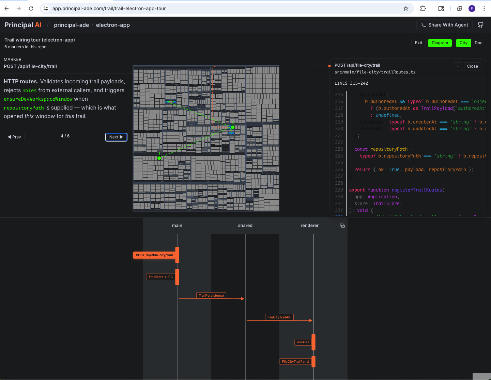

One link. No IDE. Anyone contributes.
Mon · Tue · Wed · Thu · Fri — one open slot, three time zones away.
One writes code. Three schedule the meeting. Five never show up.
Engineers track favors like accountants track receipts. So they ship broken code instead of asking for help.
They're not lazy. They're preserving relationships.
| Asked Tom for a quick review | −1 favor |
| Scheduled meeting w/ Platform | −2 hours |
| Interrupted Jane mid-flow | −1 goodwill |
| DM'd security team in #ask-secops | −½ pride |
| Pinged Fernando "you up?" | −1 friendship |
| Shipped without review anyway | −1 outage |
Same transformation. Different medium.
Like reaching over to the desk next to you. Except they're in Prague.
Of our own product. 6 markers. The trail wiring system itself.

"Clone my repo." "Check out this branch." Just a link.
Docs live outside the code. They die on arrival.
People like being asked questions they know the answer to.
Every change touches all three. Now every team can answer for their own piece — without owning the whole thing.
The old way is dead.
Reading every line was already a lie when humans wrote the code. With agents, it's a fantasy.
No more tribal knowledge. Just trails.
Additional materials and supporting documentation
Ex-Google, Ex-Airbnb. Distributed systems serving hundreds of millions. Made Area 120 finals in 3 months at Google pitching causality storage. Six-year obsession became Principal AI. Built entire architecture from first principles.
8+ years at Cisco. 5 patents. First comms professional at Cisco to file one, then filed 18 more. Innovate Everywhere Finalist, beat 400 engineering teams. NDA comms for $28B Splunk acquisition. Certificate in Applied Narrative Intelligence.
3x founder. Built businesses from $0 to $2M (Zing, Top 25 national retailer). Co-inventor on 4 patents. Designed the GTM engine generating 75K+ organic impressions. Sees market structures before markets do.
Met in a long line at SF Tech Week, October 2025. A week later, all three full-time. Fernando drove 14 hours from Little Rock to Sioux Falls.